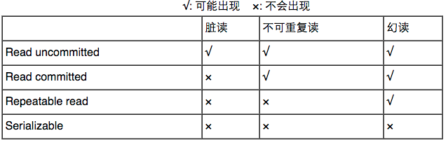

索引
1. 索引是什么？
数据库中查找操作非常普遍，索引就是提升查找速度的一种手段。
2. 索引的优点
- 通过创建唯一性索引，可以保证数据库表中每一行数据的唯一性。
- 可以大大加快数据的检索速度，这也是创建索引的最主要的原因。
- 可以加速表和表之间的连接，特别是在实现数据的参考完整性方面特别有意义。
- 在使用分组和排序子句进行数据检索时，同样可以显著减少查询中分组和排序的时间。
- 通过使用索引，可以在查询的过程中，使用优化隐藏器，提高系统的性能。
3. 索引的缺点
- 创建索引和维护索引要耗费时间，这种时间随着数据量的增加而增加。
- 索引需要占物理空间，除了数据表占数据空间之外，每一个索引还要占一定的物理空间，如果要建立聚簇索引，那么需要的空间就会更大。
- 当对表中的数据进行增加、删除和修改的时候，索引也要动态的维护，这样就降低了数据的维护速度。
4. 索引分类
B+树索引 它就是传统意义上的索引，它是最常用、最有效的索引。
哈希索引 哈希索引是一种自适应的索引，数据库会根据表的使用情况自动生成哈希索引，我们人为是没办法干预的。
全文索引 用于实现关键词搜索。但它只能根据空格分词，因此不支持中文。 若要实现搜索功能，可选择lucene。
RTree索引 在mysql很少使用，仅支持geometry数据类型；相对于BTREE，RTREE的优势在于范围查找。
5. B+树索引
数据库以页为存储单元，一个页是8K（8192Byte），一页可以存放N条记录。 页在B+树中分为：数据页和索引页。 B+树的高一般为2-4层，因此查找某一键值的行记录只需2-4次IO，效率较高。
6. 聚集索引 和 非聚集索引
不管是聚集索引还是非聚集索引，它们的逻辑结构都一棵是B+树，它们的唯一区别在于：
聚集索引的数据页存放的是完整的记录；也就是说，聚集索引决定了表的物理存储顺序； 非聚集索引的数据页只存指向记录的地址信息，它真正的数据已经在聚集索引中存储了。
7. 联合索引 和 覆盖索引
联合索引:
当查询条件涉及多列时，可以使用联合索引。
覆盖索引:
只需通过辅助索引就能获取要查询的信息，而无需再次通过聚集索引查询具体的记录信息。 由于覆盖索引并不包含整行的记录，因此它的大小远远小于聚集索引。 它比较适合做一些统计操作。
8. MyISAM索引实现
主键索引:
在主键索引中，索引页中存放的是主键和指向数据页的偏移量；数据页中存放的是主键和该主键所属行记录的地址空间。
辅助索引L
在MyISAM中，主索引和辅助索引（Secondary key）在结构上没有任何区别，只是主索引要求key是唯一的，而辅助索引的key可以重复。
综上所述，在MyISAM中，索引文件和数据文件分开存放，不管是主键索引还是辅助索引，都属于非聚集索引。
9. InnoDB索引实现
主键索引:
索引页仍然存放主键和和指向数据页的偏移量，但数据页存放的是完整的记录。 也就是在InnoDB中，数据和主键索引是存放在一起的。
辅助索引:
索引节点存放的内容一样，仍然是键值信息和指向数据页的偏移量；但数据页中存放的是键值信息和该键值对应的主键。然后通过主键查询主键索引就能找到该条记录。
综上所述：
聚集索引这种实现方式使得按主键的搜索十分高效，但是辅助索引搜索需要检索两遍索引：首先检索辅助索引获得主键，然后用主键到主索引中检索获得记录。 InnoDB的辅助索引也会包含主键列，所以，如果主键定义的比较大，其他索引也将很大。如果想在表上定义 、很多索引，则争取尽量把主键定义得小一些。InnoDB 不会压缩索引。
10. 哪些情况需要加索引？
- 在经常需要搜索的列上，可以加快搜索的速度；
- 在作为主键的列上，强制该列的唯一性和组织表中数据的排列结构；
- 在经常用在连接的列上，这些列主要是一些外键，可以加快连接的速度；
- 在经常需要根据范围进行搜索的列上创建索引，因为索引已经排序，其指定的范围是连续的；
- 在经常需要排序的列上创建索引，因为索引已经排序，这样查询可以利用索引的排序，加快排序查询时间；
- 在经常使用在WHERE子句中的列上面创建索引，加快条件的判断速度。
11. 哪些情况不需要加索引？
- 对于那些在查询中很少使用或者参考的列不应该创建索引。这是因为，既然这些列很少使用到，因此有索引或者无索引，并不能提高查询速度。相反，由于增加了索引，反而降低了系统的维护速度和增大了空间需求。
- 对于那些只有很少数据值的列也不应该增加索引。这是因为，由于这些列的取值很少，例如人事表的性别列，在查询的结果中，结果集的数据行占了表中数据行的很大比例，即需要在表中搜索的数据行的比例很大。增加索引，并不能明显加快检索速度。
- 对于那些定义为text, image和bit数据类型的列不应该增加索引。这是因为，这些列的数据量要么相当大，要么取值很少。
- 当修改性能远远大于检索性能时，不应该创建索引。这是因为，修改性能和检索性能是互相矛盾的。当增加索引时，会提高检索性能，但是会降低修改性能。当减少索引时，会提高修改性能，降低检索性能。因此，当修改性能远远大于检索性能时，不应该创建索引。
事务
1. 什么是事务？
事务就是一组具有原子性的操作，这一组操作要么全都正确执行，要么全都不执行。 事务能保证数据库从一种一致性状态转换为另一种一致性状态。
2. 事务的四大特性
事务的四大特性ACID
- 原子性
原子性指的是事务是一个不可分割的操作，要么全都正确执行，要么全都不执行。
- 一致性
事务开始前和事务结束后，数据库的完整性约束没有被破坏。
- 隔离性
事务的执行是相互独立的，它们不会相互干扰，一个事务不会看到另一个正在运行过程中的事务的数据。
- 持久性
事务结束后，事务的结果必须是永久保存的。即使数据库发生崩溃，在数据库恢复后事务提交的结果仍然不会丢失。 PS：事务只能保证数据库的高可靠性，即数据库本身发生问题后，事务提交后的数据仍然能恢复；而如果不是数据库本身的故障，如硬盘损坏了，那么事务提交的数据可能就丢失了。这属于『高可用性』的范畴。因此，事务只能保证数据库的『高可靠性』，而『高可用性』需要整个系统共同配合实现。
3. 数据库并发访问会出现的问题
更新丢失:
当有两个并发执行的事务，更新同一行数据，那么有可能一个事务会把另一个事务的更新覆盖掉。 当数据库没有加任何锁操作的情况下会发生。
脏读:
一个事务读到另一个尚未提交的事务中的数据。
该数据可能会被回滚从而失效。 如果第一个事务拿着失效的数据去处理那就发生错误了。
不可重复读
不可重复度的含义：一个事务对同一行数据读了两次，却得到了不同的结果。它具体分为如下两种情况：
虚读：在事务1两次读取同一记录的过程中，事务2对该记录进行了修改，从而事务1第二次读到了不一样的记录。
幻读：事务1在两次查询的过程中，事务2对该表进行了插入、删除操作，从而事务1第二次查询的结果发生了变化。
与『脏读』的区别？ 脏读读到的是尚未提交的数据，而不可重复读读到的是已经提交的数据，只不过在两次读的过程中数据被另一个事务改过了。
4. 事务的隔离级别
数据库事务的隔离级别有4个，由低到高依次为Read uncommitted 、Read committed 、Repeatable read 、Serializable ，这四个级别可以逐个解决脏读 、不可重复读 、幻读 这几类问题。

Read uncommitted 读未提交:
在该级别下，一个事务对一行数据修改的过程中，不允许另一个事务对该行数据进行修改，但允许另一个事务对该行数据读。 因此本级别下，不会出现更新丢失，但会出现脏读、不可重复读。
Read committed 读提交:
在该级别下，未提交的写事务不允许其他事务访问该行，因此不会出现脏读；但是读取数据的事务允许其他事务的访问该行数据，因此会出现不可重复读的情况。
Repeatable read 重复读:
在该级别下，读事务禁止写事务，但允许读事务，因此不会出现同一事务两次读到不同的数据的情况（不可重复读），且写事务禁止其他一切事务。
Serializable 序列化:
该级别要求所有事务都必须串行执行，因此能避免一切因并发引起的问题，但效率很低。
隔离级别越高，越能保证数据的完整性和一致性，但是对并发性能的影响也越大。对于多数应用程序，可以优先考虑把数据库系统的隔离级别设为Read Committed。它能够避免脏读取，而且具有较好的并发性能。尽管它会导致不可重复读、幻读和第二类丢失更新这些并发问题，在可能出现这类问题的个别场合，可以由应用程序采用悲观锁或乐观锁来控制。
三大范式
1. 数据库三大范式
第一范式
第一范式（1NF）要求数据库表的每一列都是不可分割的基本数据项，同一列中不能有多个值。 若某一列有多个值，可以将该列单独拆分成一个实体，新实体和原实体间是一对多的关系。 在任何一个关系数据库中，第一范式（1NF）是对关系模式的基本要求，不满足第一范式（1NF）的数据库就不是关系数据库。 第二范式
满足第二范式（2NF）必须先满足第一范式（1NF）。
第二范式要求实体中没一行的所有非主属性都必须完全依赖于主键；即：非主属性必须完全依赖于主键。 完全依赖：主键可能由多个属性构成，完全依赖要求不允许存在非主属性依赖于主键中的某一部分属性。 若存在哪个非主属性依赖于主键中的一部分属性，那么要将发生部分依赖的这一组属性单独新建一个实体，并且在旧实体中用外键与新实体关联，并且新实体与旧实体间是一对多的关系。 第三范式
满足第三范式必须先满足第二范式。
第三范式要求：实体中的属性不能是其他实体中的非主属性。因为这样会出现冗余。即：属性不依赖于其他非主属性。 如果一个实体中出现其他实体的非主属性，可以将这两个实体用外键关联，而不是将另一张表的非主属性直接写在当前表中。
Other
1. 数据库的乐观锁和悲观锁是什么？
数据库管理系统（DBMS）中的并发控制的任务是确保在多个事务同时存取数据库中同一数据时不破坏事务的隔离性和统一性以及数据库的统一性。
乐观并发控制(乐观锁)和悲观并发控制（悲观锁）是并发控制主要采用的技术手段。
悲观锁：假定会发生并发冲突，屏蔽一切可能违反数据完整性的操作 乐观锁：假设不会发生并发冲突，只在提交操作时检查是否违反数据完整性。
2.什么是外键：
主键：是唯一标识一条记录，不能有重复的，不允许为空，用来保证数据完整性
外键：是另一表的主键, 外键可以有重复的, 可以是空值，用来和其他表建立联系用的。所以说，如果谈到了外键，一定是至少涉及到两张表。例如下面这两张表：
3. 数据库有哪些表连接？
Join, Theta Join, Left Join, Right Join, Inner Join, Outter Join, Cross Join